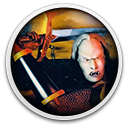

 Blood Omen: Legacy of Kain
Details
 |
|
| Playtime | Not Played |
| Last Activity | Never |
| Added | 07/05/2025 13:45:05 |
| Modified | 18/05/2025 1:45:34 |
| Completion Status | Not Played |
| Library | Gog |
| Source | GOG |
| Platform | PC (Windows) |
| Release Date | 01/11/1996 |
| Community Score | 78 |
| Critic Score | 85 |
| User Score | |
| Genre | Adventure |
| Developer | Silicon Knights |
| Publisher | Activision Crystal Dynamics Sony Computer Entertainment Square Enix Europe |
| Feature | Single Player |
| Links | Wikia Wikipedia Twitch Official GOG GOG |
| Tag | Action Adventure Classic Fantasy Good Old Game Only On GOG Top-Down |
Description
One of the darkest games of all time, Blood Omen: Legacy of Kain for the PC takes gamers on an epic quest through a gothic universe fraught with murder, magic and vengeance.
Accentuated with cinema-quality voice-overs, dynamic lighting effects and more than 25 minutes of stunning full-motion-video footage, Legacy of Kain features an engrossing storyline that invites gamers to embark on a journey through an expansive world containing more than 100 hours of intense, blood-sucking, spell-casting gameplay.
The nobleman Kain has been slain by a group of bandits and in his death, he is revived by the necromancer Mortanius for his own ends. Kain is returned in the form of a vampire and yearns to exact vengeance on those who killed him. Stronger and faster than a human being, coupled with a thirst for blood that must be satisfied regularly, he is able to dispatch his killers quickly. However, Mortanius and other forces seek to use him as a tool in a greater plot. Mortanius is of the Circle of Nine, the guardians of the Pillars of Nosgoth. These pillars, connected to the world and balancing the forces, have become corrupted and the Circle members been driven mad. At the Pillars, Kain meets Ariel - a former guardian of the Pillar of Balance, now a spirit after being murdered by an unseen assailant. She informs Kain of his relation to the Pillars and that the only way for him to restore the balance is to seek out each guardian and kill them. The fate of Nosgoth may hang on Kain decisions.
Blood Omen: Legacy of Kain is an action game where the player controls the vampiric Kain. As a vampire, Kain is able to withstand sunlight, but is harmed by water. However, he is able to obtain several cursed abilities and spells such as being able to transform into a bat, wolf, and even a cloud mist respectively, as well as learning the ability to disguise himself from creatures of weaker mind. Kain is also fixated on murder and is a master of several ways to kill and destroy his opponents. As the enemies are slain in front of him, Kain may drink their blood to restore his health, which is always trickling away, representative of his insatiable craving. To aid in the slaughter of his enemies, Kain may equip different weapons and armor, each with its own unique properties.
Accentuated with cinema-quality voice-overs, dynamic lighting effects and more than 25 minutes of stunning full-motion-video footage, Legacy of Kain features an engrossing storyline that invites gamers to embark on a journey through an expansive world containing more than 100 hours of intense, blood-sucking, spell-casting gameplay.
The nobleman Kain has been slain by a group of bandits and in his death, he is revived by the necromancer Mortanius for his own ends. Kain is returned in the form of a vampire and yearns to exact vengeance on those who killed him. Stronger and faster than a human being, coupled with a thirst for blood that must be satisfied regularly, he is able to dispatch his killers quickly. However, Mortanius and other forces seek to use him as a tool in a greater plot. Mortanius is of the Circle of Nine, the guardians of the Pillars of Nosgoth. These pillars, connected to the world and balancing the forces, have become corrupted and the Circle members been driven mad. At the Pillars, Kain meets Ariel - a former guardian of the Pillar of Balance, now a spirit after being murdered by an unseen assailant. She informs Kain of his relation to the Pillars and that the only way for him to restore the balance is to seek out each guardian and kill them. The fate of Nosgoth may hang on Kain decisions.
Blood Omen: Legacy of Kain is an action game where the player controls the vampiric Kain. As a vampire, Kain is able to withstand sunlight, but is harmed by water. However, he is able to obtain several cursed abilities and spells such as being able to transform into a bat, wolf, and even a cloud mist respectively, as well as learning the ability to disguise himself from creatures of weaker mind. Kain is also fixated on murder and is a master of several ways to kill and destroy his opponents. As the enemies are slain in front of him, Kain may drink their blood to restore his health, which is always trickling away, representative of his insatiable craving. To aid in the slaughter of his enemies, Kain may equip different weapons and armor, each with its own unique properties.